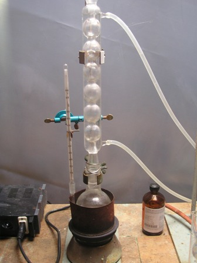
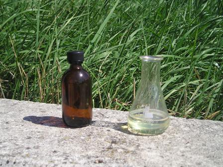

Ogni tanto, irregolare ma prevedibile... zack! : ecco che arriva l'estere!
Chi è l'attore protagonosta di oggi? Qualche post fa dicevo che avrei congiunto in matrimonio l'alcool benzilico con i primi tre acidi carbossilici (non tutti assieme povero alcool!) presentando poi i risultati: dopo le prime nozze già celebrate (acetato di benzile), ecco dunque il propionato; tengo per ultimo il formiato perchè quest'ultima unione mi ha un po' deluso, ma ne parleremo a suo tempo.
Per la parte generale ved. eventualmente l'acetato.

Materiale occorrente:
- alcool benzilico
- acido propionico
- acido solforico
- CaCl2
- refrigerante allhin
- vetreria varia

- In un pallone da 250 ml introdurre 30 ml di alcool benzilico e 50 ml di acido propionico; mescolando energicamente aggiungere 1 ml di H2SO4 conc. (ho messo volutamente poco acido e preferito giocare sul tempo piuttosto che rischiare ossidazioni inopportune vista la T° elevata in gioco) predisporre il sistema per riscaldamento a ricadere con mantello riscaldante o con bagno ad olio o sabbia.
Portare appena sotto ebollizione e tenere a minimo riflusso per una decina di ore ad una T° di circa 200-205° agitando ogni tanto.
Alla fine anche di questa giornata (!) versare la miscela in 150 ml di acqua e mescolare accuratamente.
Il propionato di benzile CH3-CH2-COO-CH2-C6H5 si emulsiona con l'acqua acida ma si separa lentamente senza problemi.
Dopo la separazione, decantare cautamente il liquido sovrastante eliminando in questo modo la maggior parte della notevole acidità residua.
Aggiungere altri 150 ml di una soluzione satura di NaHCO3 e mescolare fino a neutralizzazione completa dell'acidità; eventualmente aggiungere pian piano altro bicarbonato fino a neutralizzazione perfetta.
Lasciar ancora separare le suggestive bolle che sembrano oleose e lavare bene un altro paio di volte con acqua pura.
E' interessante questa fase perchè l'estere e la soluzione acquosa salina arrivano al punto di avere densità quasi identiche e si forma quell'effetto che si vede in quei termometri gadget a bolle di liquido colorate.
Alla fine separare dall'ultima acqua con imbuto separatore e seccare con 5 g di CaCl2.
Si deve ottenere un liquido incoloro perfettamente limpido (se è leggermente lattiginoso contiene ancora umidità).
Ho lavato accuratamente il prodotto volendo evitare la distillazione (da fare a pressione ridotta), ottenendone 32 ml, circa il 71%; non ve volevo perdere metà e rischiare la decomposizione con una distillazione normale visto il p.e. molto elevato (220°) e la piccola quantità di partenza.
D. 1,05 - P.e. 219-220°-

Anche il propionato di benzile è un liquido limpido incoloro, leggermente oleoso e con forte odore gradevole aromatico fruttato, molto simile all'acetato ma meno "duro" di questo; è un costituente anch'esso dell'essenza di gelsomino e simili ed è ampiamente usato in profumeria per fragranze di tipo fruttato o orientali.